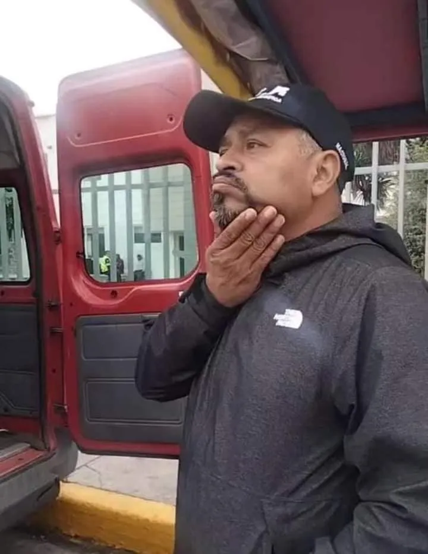

Canoa (1976)
Una pieza maestra del cine mexicano que retrata el fanatismo y la injusticia social. Indispensable para entender la importancia de la verdad y la organización civil.
Ver Trailer OficialLa RCPN es un movimiento de resistencia civil nacional dedicado a la vigilancia del Estado de Derecho y la protección ante el abuso de autoridad.
La Resistencia Civil Pacífica Nacional es una organización dedicada a empoderar al ciudadano mexicano a través del conocimiento jurídico y la acción colectiva. Bajo el liderazgo de Arturo Morales Camargo, trabajamos para erradicar el abuso de autoridad y fomentar una cultura de respeto irrestricto a los derechos humanos.
Nuestra misión es proporcionar herramientas tácticas y legales para que ningún ciudadano sea víctima de la corrupción en las vías generales de comunicación. Creemos que una ciudadanía informada es la mejor defensa contra la arbitrariedad, promoviendo siempre el diálogo pacífico pero firme respaldado por la ley nacional.
Consulta en tiempo real los reportes de retenes y operativos para garantizar un tránsito libre y seguro por las carreteras de la República Mexicana.
| Ubicación | Corporación | Riesgo |
|---|---|---|
| Caseta Tepotzotlán, Mex-Qro | Guardia Nacional | ALTO |
Mantente al día con las últimas resoluciones de la SCJN y recomendaciones de la CNDH que protegen tu integridad y posesiones.
Obras fundamentales para entender la historia de la lucha social en México y el mundo, fomentando un pensamiento crítico y participativo.
Una pieza maestra del cine mexicano que retrata el fanatismo y la injusticia social. Indispensable para entender la importancia de la verdad y la organización civil.
Ver Trailer OficialDocumental mexicano dirigido por Roberto Hernández y Geoffrey Smith que documenta el caso real de José Antonio Zúñiga, un joven trabajador condenado a veinte años de prisión sin pruebas suficientes y sin una defensa adecuada. La cinta expone con rigor las fallas estructurales del sistema de justicia penal en México: la fabricación de culpables, la presión institucional sobre testigos y la vulneración sistemática del derecho a la defensa. Su estreno en 2011 generó un debate nacional que contribuyó a impulsar la reforma al sistema penal acusatorio. Una obra imprescindible para comprender por qué la defensa jurídica ciudadana no es opcional, sino una necesidad constitucional.
Ver Trailer OficialPelícula dirigida por Icíar Bollaín que narra, en dos planos simultáneos, la resistencia del pueblo boliviano frente a la privatización del agua durante la llamada Guerra del Agua en Cochabamba (2000) y el rodaje de una película sobre la conquista española. La obra explora con profundidad los mecanismos de la resistencia civil pacífica frente al poder económico y estatal, y la forma en que la organización colectiva puede revertir decisiones que afectan derechos fundamentales. Protagonizada por Luis Tosar y Gael García Bernal, es un retrato vivo de que la lucha por los derechos no reconoce fronteras y que el ciudadano organizado tiene la capacidad real de transformar la realidad institucional.
Ver Trailer Oficial
Estrategia NacionalCoordinador Nacional · Resistencia Civil Pacífica Nacional
Arturo Morales Camargo es figura central del activismo jurídico-ciudadano en México. Su convicción es clara: el ciudadano tiene el derecho y la obligación de conocer sus garantías constitucionales. Se formó en la acción directa, documentando abusos de autoridad y acompañando jurídicamente a quienes vieron sus derechos vulnerados. Construyó redes de solidaridad civil en todo el territorio nacional. Comprendió desde sus inicios que la ignorancia de la ley no solo protege al infractor. También desarma al ciudadano frente al poder arbitrario.
Su aportación más significativa es la sistematización de estrategias legales frente a revisiones vehiculares arbitrarias. El Artículo 16 Constitucional exige mandamiento escrito fundado y motivado para toda molestia a personas o posesiones. Bajo su coordinación, la RCPN ha documentado centenares de irregularidades ante la Comisión Nacional de los Derechos Humanos. El expediente nacional resultante evidencia patrones sistemáticos de exceso policial. Su trabajo es referente para organizaciones civiles, abogados independientes y ciudadanos que exigen sus derechos.
La visión de Arturo Morales trasciende la coyuntura. Su meta es construir una ciudadanía informada, organizada y capaz de resistir sin violencia cualquier forma de opresión institucional. Trabajamos para consolidar una plataforma nacional de inteligencia jurídica. Conectamos a ciudadanos, defensores de derechos humanos y operadores legales en tiempo real. Nuestra meta es que ningún mexicano enfrente solo el abuso de autoridad. La fuerza de la ley, ejercida colectivamente, es la herramienta más poderosa de transformación social.